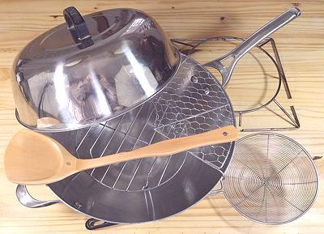

Wok Set

This pan and set of tools and accessories is pretty much essential for any
approach to any of the many Chinese cuisines. Woks are fine for other cuisines
as well, especially Korean, Japanese, and Southeast Asian. Also anywhere a
whole pile of greens are added and stirred in to wilt down, or if cooking
with the minimum amount of oil is desired.
Included in the Wok Set are:
¤ The Wok itself. This one is a 13 inches (33 cm),
which is about the smallest that is truly effective. The most common size is
14 inches (35.6 cm).
¤ The Wok Lid. Essential for steaming and keeping
things warm.
¤ The Wok Ring. Western stoves are not fitted for
woks, so a Wok Ring (top right) is needed for round bottomed woks. The one
shown is of wire, with cuts to make if fit tightly on the stove grid.
¤ The Wok Shovel. This is the main tool for stir
frying and otherwise manipulating foods in the Wok.
¤ A Spider Skimmer. This will lift things out of
oil taking the minimum amount of oil with it. It can also lift things out of
water.
¤ Draining Rack. This, clinging to the upper right
rim of the Wok, is for receiving deep fried foods and letting them drain back
into the Wok.
¤ The Steamer Rack is seen in the bottom of the
Wok. It can support plates or other containers for steaming foods too wide
to fit in a regular steamer.
More on Chinese Kitchen Gear.
The Wok
Chinese Wok:
This is the wok geometry we are familiar with.
it is a relatively shallow bowl shape which allows pushing things a ways
up the sides to clear the center.
Japanese Wok:
This wok has more the geometry of an indian
Kadhai, with high sides, and often
an even tighter radius. This wok can handle a lot of ingredients, and is
good for stews and the like, but less suitable for general stir frying.
Size, Shape:
The standard wok size in North America is 14
inches (35.6 cm); For my use, cooking for 1 to 3 persons, I find a 13 inch
(33 cm) is adequate, but anything smaller would be quite limited. For
Western stoves it is best to have a flat bottomed wok, but the flat should
not be more than 5 inches (13 cm), or the wok will not work properly. I'm fine
with a round bottom wok because I have a wire ring cut so the wok is barely
above the gas flame, but a round bottom won't work on an electric stove or
at all on an induction stove.
Temperatures:
Wok cooking is by nature high temperature, at least for parts of the
cooking. Many cookbooks give descriptions of steps without realizing they
won't work quite that way in our homes - their recipes are developed on
restaurant stoves, which are about 20 times as hot.
The famous Wok Hei flavor, characteristic of Cantonese restaurant
cooking, uses extreme heat and high flames combined with special techiques
by highly trained cooks - totally impossible on a home stove. J. Kenji
López-Alt, in his book The Wok, presents a method using a
powerful Kitchen Torch. The food is
poured out onto a baking sheet, singed with the torch, then poured back into
the wok for finishing.
Material:
Woks are made of various metals, some more suitable
than others.
Sheet Steel:
This is the go-to wok for serious wok
enthusiasts and is the standard in Guangzhou (Canton) where the folks are
extreme wok fanatics. These are light weight for easy manipulation, respond
very quickly to temperature changes, withstand the fiercest flames, and are
nearly indestructible. In the home, they do take attention for seasoning,
cleaning and preventing rust.
Sheet steel woks may be formed by pressing, and will be completely smooth,
or by spinning, which will usually leave a light, closely spaced ring pattern
on the surface of the steel. These are considered superior because the texture
helps hold ingredients that are pushed up the side to clear the center, and
tend to be thicker gage steel than pressed woks. My 14 inch spun steel wok by
Atlas Metal Spinning is top quality, but no longer made.
Cast Iron:
I have a Japanese cast iron wok, but never use
it. It is much less responsive to heat changes than even my Calphalon tri-ply
wok, and takes a long time to heat up. Cast iron woks are a prestige item in
Guangzhou (Canton), but theirs are practically egg shell thin, and very
fragile, so a backup is needed in case they get hit and shatter.
Tri-ply Stainless:
I admit - the wok I routinely use
is a 13 inch Calphalon tri-ply (in photo above). I am not a wok fanatic, so
I get along fine with this for most uses. It is sufficiently responsive to
temperature changes, is very easy to clean, and requires minimum care. It is
particularly good for long braises as it is non corrosive. It is possible
it can come unlaminated at Guangzhou temperatures, but my home stove can't
get anywhere near that hot. Most of these (if they have a flat bottom) will
work on an induction range because, the outside layer will be a magnetic
alloy.
Caution: don't use a stainless wok for deep frying. It will be
quickly coated with varnish that is very difficult to remove, and will look
ugly. Use a sheet steel wok which is supposed to be covered with varnish.
I actually use an Indian sheet steel
Kadhai for deep frying. It looks a lot like a wok, but it's
geometry is optimized for deep frying.
Non-stick Woks:
These are to be avoided, because proper
wok usage involves temperatures that will destroy most non-stick coatings,
releasing toxic fumes.
Accessories
Wok Lid:
Some woks come with a lid. For others, they are
available from a well stocked Asian market, or on-line. The one I use with
my 13 inch wok is 12-1/4 inches diameter (31 cm - probably sold as 30 cm)
stainless steel. For a 14 inch wok they are about 13.6 inches (35 cm)
diameter.
Wok Ring:
Woks like the Calphalon in the photo at top have
a small flat at the center, so doesn't need a Wok Ring, but round bottomed
woks and Kadhais do. I prefer a wire type as it allows better heat flow,
and can be cut to fit the burner tightly. I also have a regular aluminum
one I set out of the way on the kitchen floor so I can get a hot wok or
kadhai off the stove when needed.
Wok Shovel:
Use wooden shovels for tri-ply or nonstick
woks. For sheet steel and cast iron woks, a metal shovel is standard, but
a wooden one can still be used. The shovel is an essential item for stir
frying.
Spider Skimmer:
This device is used when deep frying in a
wok or kadhai. It will take far less oil with it than a slotted spatula or
spoon. The traditional Chinese spider skimmer has a woven, lace-like mesh,
but this is much harder to clean than simple wire circles.
Draining Rack:
These must be exactly the right size for
your wok. I actually don't use this item, because if I've gone to the
trouble to do deep frying, I'm usually doing a lot, so I use a larger
external wire basket lined with paper towels.
Steamer Rack:
This device is used to support plates or
other containers for steaming, especially an oval plate for steaming
whole fish. For an example, see our recipe
Steamed Fish - Chinese
Style.
kp_wokset 220314 - www.clovegarden.com
©Andrew Grygus - agryg@clovegaden.com
Photos on this
page not otherwise credited are © cg1 -
Linking to and non-commercial use of this page permitted